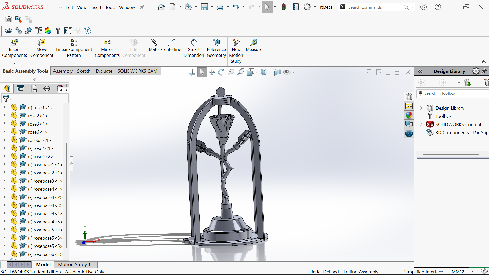
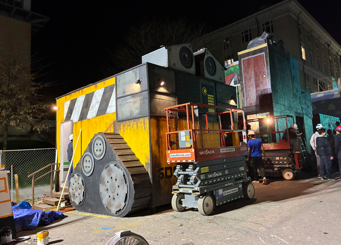
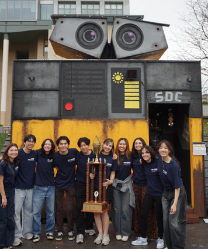
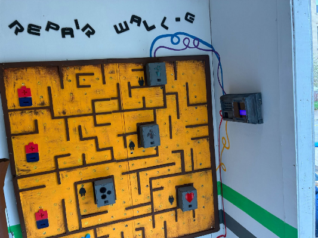
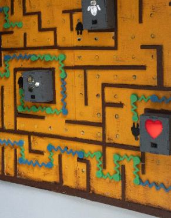
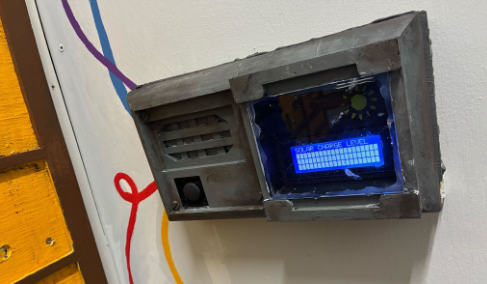

Booth Builds
Every spring, CMU's Spring Carnival has student organizations design and build full one-story structures with working electricity. As Game & Prop Chair, I design and fabricate themed games and props.
"Enchanted Objects" — a three-stage interactive game plus themed props. Each game uses an Arduino Nano, DFPlayer Mini, speaker, and magnetic reed switches on a prototyping board. All pieces 3D printed, laser cut, painted, and built from wood.


1 · The Storybook — A hinged wooden book with a reed switch. Opening the cover triggers a musical cue, starting the experience.


2 · The Dining Table — Players set the table; reed switches beneath each position detect correct placement and trigger Be Our Guest.


3 · The Enchanted Rose — A magnetic jigsaw puzzle; reed switches detect each petal. Completing it plays Tale as Old as Time while two semicircular programmable LED strips run a custom twinkling and fading sequence synced to the music.


"Repair Wall-E" - players reconnect batteries to checkpoints through a magnetic maze to restore Wall-E's power, tracked on an Arduino-controlled LCD display. Designed in SolidWorks; fabricated with laser cutting, 3D printing, and custom circuitry.




